BasePythonRunner: the executor JVM's side of a Python invocation
component index
org.apache.spark.api.python.BasePythonRunner[IN, OUT] turns an executor-side partition iterator into another iterator by exchanging data with a local Python worker. It is not org.apache.spark.deploy.PythonRunner, the launcher that starts the application script and sets up the classic driver's Py4J gateway. A SQL query or RDD action can use many executor-side runner invocations without starting another Python driver.
Flow at a glance
- Executor runner: The runner gets a local worker and gives the task an output iterator.
- Socket exchange: As the task pulls output, the runner feeds input and reads results over the same socket.
- Clean finish: The runner releases a reusable worker only after reading its final reply.
Watch for: If the task stops reading early, cleanup closes the connection instead of returning the worker to the pool.
Show the animated flow

Entry points and ownership
| Caller or peer |
Interface |
PythonRDD.compute |
Creates api.python.PythonRunner for this split and calls compute(parent.iterator, split.index, context). This concrete subclass uses NON_UDF and byte-array records/batches. The PythonFunction carries command bytes, executable/version, environment, includes, broadcast references, and an accumulator. RDD entry. |
| SQL Python operator |
For example, BatchEvalPythonExec prepares pickled input batches and calls a SQL runner with SQL_BATCHED_UDF, argument metadata, and metrics. The base class supplies the lifecycle; subclass writers/readers define the command and data encoding. SQL entry. |
SparkEnv and worker factory |
Acquire a worker for the effective executable/modules/environment; release it after a clean finish or close it on task cleanup. The factory and process may outlive compute; the Writer, ReaderIterator, and cancellation state belong to this invocation. |
Trace: pull split 7 through a Python mapPartitions
Sequence diagram · Open full sizeText equivalent
sequenceDiagram
participant T as Executor task thread
participant R as Runner and its output iterator
participant W as Local worker
T->>R: compute(parent iterator, 7, TaskContext)
R->>R: Acquire worker, then arm completion listener and monitor
R-->>T: Interruptible output iterator
T->>R: Pull next output
R->>W: Init frame, then serialized parent input as writable
W-->>R: Init response, then result frames as available
R-->>T: Next output batch
W-->>R: Metrics, end-of-data, accumulator updates, finish reply
R->>R: Release once if reusable
compute derives executor-local settings (including local directories, task CPU allocation, and worker memory when specified) before obtaining the worker. It registers a task-completion listener and a cancellation monitor. It returns an InterruptibleIterator, not a materialized partition or a future for one. Acquire and construct iterator.Writer.open prepares a START_OF_INIT_MESSAGE frame: byte length, split index, Python version, task context, SparkFiles/includes, per-worker broadcast changes, eval type, runner/eval configuration, and command. The frame length covers the payload; input records follow separately. Broadcast IDs already installed for this worker need not be resent. Header start, header finish, broadcast differences.- In the ordinary RDD path, pulling output drives a non-blocking selector on the task thread: read available output, feed buffered parent input when writable. On input exhaustion the RDD writer emits
END_OF_DATA_SECTION, then Writer.close emits END_OF_STREAM. This allows progress in both directions without materializing the partition. Do not infer a dedicated writer thread for every task: at this revision the optional pipelined mode applies to UDF eval types, not NON_UDF, and uses a blocking channel and separate JVM writer. Selector loop, buffering, pipelined branch.
ReaderIterator checks START_OF_INIT_RESPONSE before decoding any result. The RDD reader treats a nonnegative length as data and negative control values as metrics, Python exception, or end-of-data. It consumes accumulator updates and the worker's final reply before returning the process to the pool. releasedOrClosed.compareAndSet(false, true) prevents task cleanup from closing a reusable worker already handed to someone else. If the consumer stops early, the completion listener closes the unreleased channel. Reader and metrics, RDD frames, terminal actions.
If a task stalls or fails
Use the executor log's task identifier: Times: total ... boot ... init ... finish separates startup/initialization from time after init. A Python traceback in an init response points to worker setup or command loading; one after successful init points into input processing, user code, or result serialization. An I/O exception with a recorded writer failure can instead be an upstream iterator failure: inspect the earlier cause before blaming Python.
For cancellation, the monitor waits for an interrupted yet incomplete task, then can destroy its worker after spark.python.task.killTimeout. This is different from an optional idle I/O timeout and from eviction of an already released worker by the factory. See error selection and cancellation.